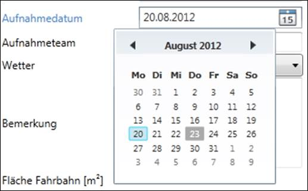

Die Bearbeitung von Daten erfolgt generell in Dialogen.
In Dialogen finden Sie folgende Schaltflächen:
|
Das System speichert die eingegebenen Daten. Der Dialog bleibt geöffnet. |
|
|
Das System bricht die Bearbeitung ab. Der Dialog wird ohne eingegebene Daten zu speichern geschlossen. |
|
|
Das System speichert die eingegebenen Daten und schliesst den Dialog. |
|
|
Das System löscht (nach einer Sicherheitsabfrage) den Datensatz |
Warnung: Datensätze werden physisch gelöscht, d.h. es gibt keinen „Papierkorb“ aus dem man versehentlich gelöschte Datensätze wieder herausholen kann. Auch abhängige Datensätze gehen verloren.
Beim Erfassen bzw. Bearbeiten von Daten wird zwischen Pflichtfeldern und optionalen Feldern unterschieden (siehe Abbildung 3).
Abbildung 3: Pflichtfelder (Aufnahmedatum) und ein optionale Felder (Aufnahmeteam)
Versuchten Sie, die Daten zu speichern, ohne dass Sie alle Pflichtfelder ausgefüllt haben, so wird die Zeile markiert und ein Fehlerhinweis (rotes Rufzeichen) erscheint rechts neben den betroffenen Pflichtfeldern (siehe Abbildung 4). Wenn Sie die Maus über den Fehlerhinweis bewegen, erscheint eine entsprechende Fehlermeldung.
Abbildung 4: Validierung eines Pflichtfelds
Zusätzlich gibt es je nach Datenfeld eventuell noch weitere Validierungen (z.B. Wertebereich eines numerischen Felds), die analog behandelt werden.
Datumsfelder zeichnen sich durch ein kleines Kalender-Symbol rechts neben dem Eingabefeld aus. Ein Klick auf das Kalender-Symbol öffnet einen Kalender für die Datumsauswahl (siehe Abbildung 5). Der Anwender kann also entweder das Eingabefeld mit der Tastatur ausfüllen oder das Datum mit der Maus auswählen.
EMSG-Mobile hat das Datumsfeld „Aufnahmedatum“ zudem vorausgefüllt.

Abbildung 5: Datumauswahl